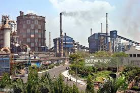
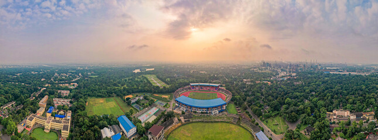
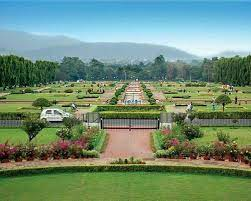

Jamshedpur: The Industrial Heartland of Jharkhand
Ankit RajJamshedpur is a city located in the Indian state of Jharkhand. It is the largest city in Jharkhand and is known as the "Steel City" due to its rich industrial history. The city was founded by Jamsetji Nusserwanji Tata in 1907, the founder of the Tata Group. Jamshedpur is home to several large industrial plants, including Tata Steel, Tata Motors, and Tata Power.
One of the most interesting facts about Jamshedpur is that it is the first planned industrial city in India. The city was designed by the American architect Albert Mayer and his assistant, the Hungarian architect, and urban planner, F. L. Olmsted Jr. The city was designed to be self-sufficient with its own infrastructure, including roads, hospitals, and schools.
Jamshedpur is also home to several educational institutions, including the Indian School of Mines (ISM), XLRI - Xavier School of Management, and the National Institute of Technology (NIT). These institutions have contributed to the growth and development of the city's knowledge-based economy.
In conclusion, Jamshedpur is a city with a rich history, a vibrant culture, and a promising future. Its industrial heritage, combined with its modern infrastructure and educational institutions, make it a unique and exciting place to live and work. So, if you're looking for a city that is both traditional and modern, look no further than Jamshedpur!